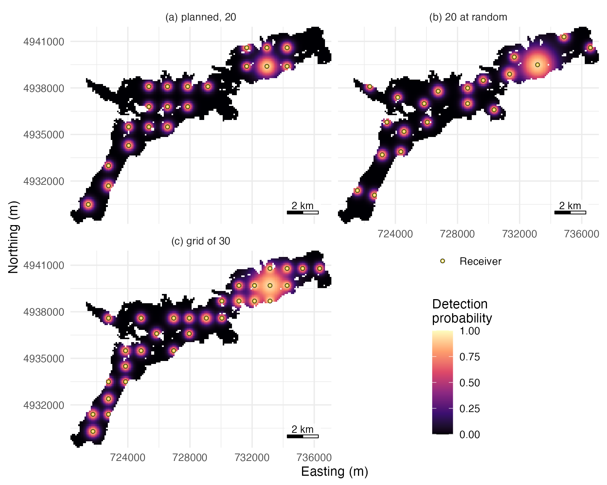
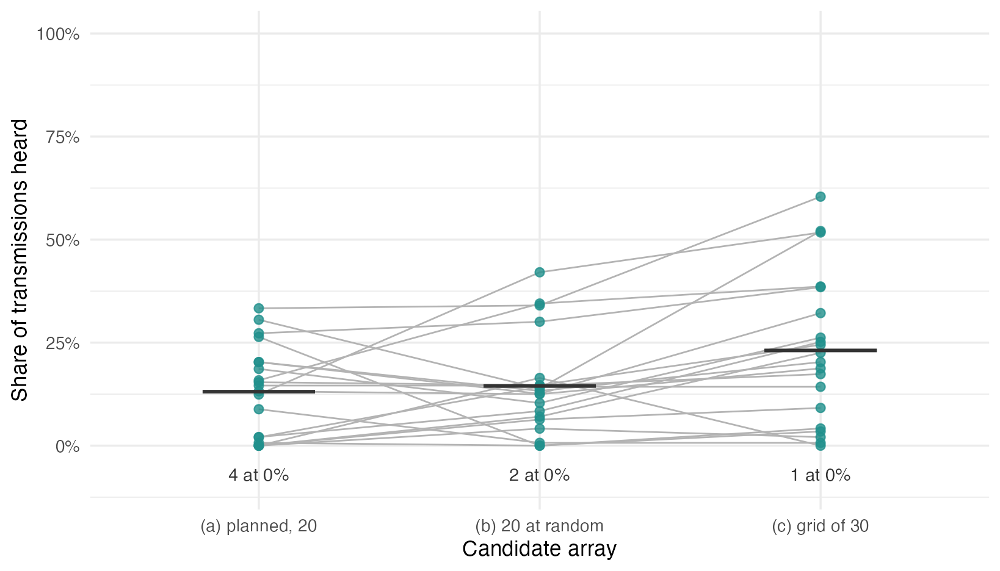

Design an array for your own water body: compare layouts
design-an-array.RmdThis page starts from your own data: a depth raster, one or more lists of candidate stations, and a range test. It lays the candidates side by side, scores them on the same simulated animals, and writes the chosen stations for the field crew. The candidates can be arrays for a new study or changes to an array already in the water, such as moving or adding stations. The Stoney Lake example data of arraydesign and of the detfield R package stand in for yours. Each step is explained in Get started.

Figure 1. Probability that at least one receiver of each candidate array hears one transmission from each 100 m water cell of Stoney Lake, under the range model fitted in section 2: (a) the 20 planned stations; (b) 20 receivers at random; (c) a grid of 30.
With ten more receivers, the grid of 30 brings 22% of the water to a probability of 0.5 or more; the planned 20 reach 11% and 20 at random 15%. Section 5 scores what the extra receivers add to detections and positions.
system.file("scripts", package = "arraydesign") holds
this page’s code as design-an-array.R; copy it and change
the file names to yours.
1. Read your files
The depth raster is in a projected coordinate system in metres, with
land as NA; depth may be stored as positive or negative
numbers. The station list has a station_id and either
deploy_lat and deploy_lon in WGS 84 or
x and y in the raster’s coordinate system. The
range test has one row per receiver, tag and hour, with the receiver’s
depth, the distance to the tag, the transmissions sent and the
detections heard. Here the range test is
detfield::stoney_range_test, two lines of receivers at 1 m
and 25 m simulated from the example’s assumed range model; read yours
with read.csv(). Replace the paths with yours.
# Load the package, and ggplot2 for the figures
library(arraydesign)
library(ggplot2)
# Read your depth raster and candidate stations
lake <- terra::rast(system.file("extdata", "stoney_depth.tif",
package = "arraydesign"))
planned <- read.csv(system.file("extdata", "planned_stations.csv",
package = "arraydesign"))
# Take the range test: one row per receiver, tag and hour
range_test <- detfield::stoney_range_test
# Check the raster's coordinate system and cell size, m
terra::crs(lake, describe = TRUE)$code
#> [1] "32617"
terra::res(lake)
#> [1] 100 100
# Check the stations, and the receiver depths of the range test, m
head(planned, 3)
#> receiver_serial station_id deploy_lat deploy_lon
#> 1 R001 S001 44.49377 -78.21465
#> 2 R002 S002 44.50416 -78.19781
#> 3 R003 S003 44.51585 -78.19724
table(range_test$depth_m)
#>
#> 1 25
#> 720 7202. The range model: yours or the default
You fit the range model to your own range test, with the model of
your choice, and pass the fit to detfield::de_model(). Here
it is a logistic regression on distance, receiver depth and their
interaction.
# Fit a logistic regression of detections on distance and receiver depth
range_fit <- glm(cbind(heard, sent - heard) ~ distance_m * depth_m,
family = binomial, data = range_test)
# Pass the fit to detfield as the range model of this page
range_model <- detfield::de_model(range_fit)
range_model
#> <de_model> glm, cbind(heard, sent - heard) ~ distance_m * depth_m
#> reads: distance_m, depth_m
#> sigma: station_hour not given
#> blocked line of sight: curve read at the distance through waterA model that also varies over time, by hour or season, goes in
through detfield::de_model() the same way; the detfield
range-model article fits one.
detfield::de_logistic() stands in where no range test
was run: a logistic curve through d50 and d05
given at two receiver depths and interpolated between them. Get started uses it with the example’s
assumed values. The chunk reads both models at the two depths of the
test and at 10 m, between them.
# Set the stand-in of Get started: d50 and d05 for receivers 1 m and 35 m deep
stand_in <- detfield::de_logistic(d50 = c(250, 750), d05 = c(500, 1500),
depth = c(1, 35))
# Read the detection probability of each model at 250, 500 and 750 m
distances <- c(250, 500, 750)
probability <- do.call(rbind, lapply(c(1, 10, 25), function(depth) {
data.frame(depth_m = depth, distance_m = distances,
fitted = round(plogis(range_model$predict(distances,
depth_m = depth)), 3),
stand_in = round(plogis(stand_in$predict(distances,
depth_m = depth)), 3))
}))
probability
#> depth_m distance_m fitted stand_in
#> 1 1 250 0.497 0.500
#> 2 1 500 0.048 0.050
#> 3 1 750 0.003 0.003
#> 4 10 250 0.651 0.735
#> 5 10 500 0.156 0.288
#> 6 10 750 0.018 0.056
#> 7 25 250 0.843 0.849
#> 8 25 500 0.615 0.623
#> 9 25 750 0.321 0.328The next chunk finds the largest difference between the two at each depth, over every 10 m from 0 to 1,500 m.
# Find the largest difference in detection probability, and where, per depth
fine_distances <- seq(0, 1500, by = 10)
largest <- do.call(rbind, lapply(c(1, 10, 25), function(depth) {
gap <- abs(plogis(range_model$predict(fine_distances, depth_m = depth)) -
plogis(stand_in$predict(fine_distances, depth_m = depth)))
data.frame(depth_m = depth, largest = round(max(gap), 3),
at_m = fine_distances[which.max(gap)])
}))
largest
#> depth_m largest at_m
#> 1 1 0.004 330
#> 2 10 0.149 420
#> 3 25 0.008 550The two agree at 1 m and 25 m, where the test has data, and differ at 10 m: a test at two depths cannot say how range changes between them. Receivers deeper than 25 m are an extrapolation. This page uses the fit.
3. Lay out the candidate arrays
Water shallower than 1 m is set to NA first, so that no
grid or random receiver goes where it cannot be moored.
Your station list goes in with method = "manual"; the
stations keep their names, and deploy_z is the depth under
each. The station file included with the package holds the 20-receiver
grid of Get started, so “planned” below is that array read from a
file.
# Place the planned stations on the raster
planned_receivers <- place_receivers(lake, method = "manual",
coords = planned)
head(planned_receivers, 3)
#> receiver_serial station_id x y deploy_lat deploy_lon deploy_z
#> 1 R001 S001 721454 4930491 44.49377 -78.21465 8.931593
#> 2 R002 S002 722754 4931691 44.50416 -78.19781 9.132986
#> 3 R003 S003 722754 4932991 44.51585 -78.19724 1.285483A station far onto land or off the raster is refused, and the message names its row. Here the longitude of S003 has a typing slip:
# Copy the planned stations with a slip in the longitude of row 3
stations_with_slip <- planned
stations_with_slip$deploy_lon[3] <- -78.29706
# Try to place them; place_receivers() refuses the row and names it
try(place_receivers(lake, method = "manual", coords = stations_with_slip))
#> Error in place_receivers(lake, method = "manual", coords = stations_with_slip) :
#> `coords` has 1 row outside the raster: 3.The other candidates here are 20 receivers at random cells at least 1
km apart and a grid of 30. A second station list of your own goes in the
same way as the first. designs holds the three.
# Name the three candidate arrays
designs <- list(
planned = planned_receivers,
random_20 = place_receivers(deployable, n = 20, method = "random",
spacing = 1000, seed = 1),
grid_30 = place_receivers(deployable, n = 30, method = "grid", seed = 1)
)
# Count the receivers in each
sapply(designs, nrow)
#> planned random_20 grid_30
#> 20 20 30The chunk gives the deepest receiver of each design, in metres.
# Give the depth of the deepest receiver in each design, m
round(sapply(designs, function(layout) max(layout$deploy_z)), 1)
#> planned random_20 grid_30
#> 24.8 30.9 31.9The random layout and the grid of 30 each have a receiver deeper than 25 m, beyond the range test.
A grid can also be set by its spacing; the number of receivers then follows from the water.
# Count the receivers in a grid 2 km apart
nrow(place_receivers(deployable, spacing = 2000))
#> [1] 94. Map what each candidate hears
One detection field per design, built as in step 2 of Get started.
# Build one detection field per design
fields <- lapply(designs, function(layout) {
detfield::de_field(detfield::water_distances(lake, layout), range_model)
})
#> 34 of 1,949 receiver-cell pairs with p >= 0.05 have land on the
#> straight line between them; with blocked = 0 the curve is read on
#> them as if the line were clear. See `blocked` in ?de_model.
#> 87 of 2,340 receiver-cell pairs with p >= 0.05 have land on the
#> straight line between them; with blocked = 0 the curve is read on
#> them as if the line were clear. See `blocked` in ?de_model.
#> 115 of 3,457 receiver-cell pairs with p >= 0.05 have land on the
#> straight line between them; with blocked = 0 the curve is read on
#> them as if the line were clear. See `blocked` in ?de_model.coverage_summary() gives single-receiver coverage of
each design at 0.5 and 0.8.
# Count the coverage of each design, one row per design and threshold
coverage <- do.call(rbind, lapply(names(fields), function(design) {
cbind(design = design, coverage_summary(fields[[design]]))
}))
coverage
#> design threshold n_cells n_water_cells share n_receivers
#> 1 planned 0.5 537 4818 0.11145704 20
#> 2 planned 0.8 156 4818 0.03237858 20
#> 3 random_20 0.5 699 4818 0.14508095 20
#> 4 random_20 0.8 203 4818 0.04213367 20
#> 5 grid_30 0.5 972 4818 0.20174346 30
#> 6 grid_30 0.8 296 4818 0.06143628 30The chunk below stacks the array-level probability of step 2 of Get started for the three designs, with the panel each is drawn in.
# Name the panels, in the order of `designs`
panel_names <- c(planned = "(a) planned, 20", random_20 = "(b) 20 at random",
grid_30 = "(c) grid of 30")
# Compute the probability that any receiver hears, per design and cell
array_cover <- do.call(rbind, lapply(names(fields), function(design) {
data.frame(design = panel_names[[design]],
p = 1 - apply(1 - fields[[design]]$p, 1, prod),
terra::xyFromCell(lake, fields[[design]]$cells))
}))
# Give the share of water cells at p >= 0.5, per design
tapply(array_cover$p >= 0.5, array_cover$design, mean)
#> (a) planned, 20 (b) 20 at random (c) grid of 30
#> 0.1120797 0.1475716 0.2195932The next chunk draws Figure 1, at the top of the page.
# Stack the receivers of the designs, with the panel each is drawn in
design_rings <- do.call(rbind, lapply(names(designs), function(design) {
data.frame(x = designs[[design]]$x, y = designs[[design]]$y,
design = panel_names[[design]])
}))
# Draw one panel per design: the array's probability, and the receivers on
# top as a dark ring under a coloured one, keyed by the shape scale
ring <- detfield::positionr_ring_colours()
coverage_map <- ggplot(array_cover, aes(x, y)) +
geom_raster(aes(fill = p)) +
detfield::scale_fill_probability(name = "Detection\nprobability") +
geom_point(data = design_rings, aes(shape = "Receiver"),
colour = ring[["edge"]], size = 0.9, stroke = 0.7) +
geom_point(data = design_rings, aes(shape = "Receiver"),
colour = ring[["heard"]], size = 0.9, stroke = 0.35) +
scale_shape_manual(name = NULL, values = c(Receiver = 21)) +
facet_wrap(~design, ncol = 2) +
coord_equal(expand = FALSE) +
labs(x = "Easting (m)", y = "Northing (m)") +
detfield::annotation_scale_bar(location = "br") +
detfield::theme_positionr() +
theme(legend.position = "inside", legend.position.inside = c(0.75, 0.25))
coverage_maplistening scores the coverage of the receivers in the
water on a given day, such as one when two have been pulled for
download:
# Count the coverage of the planned array with S006 and S016 pulled
pulled <- c("S006", "S016")
coverage_summary(fields$planned,
listening = setdiff(planned_receivers$station_id, pulled))
#> threshold n_cells n_water_cells share n_receivers
#> 1 0.5 408 4818 0.08468244 18
#> 2 0.8 122 4818 0.02532171 185. Score the candidates on the same animals
evaluate_array() simulates animals, detects their
transmissions through the field, positions them and scores the
positions, as in step 4 of
Get started. The three designs are scored on the same 20 animals
over 6 hours: the same tracks and transmissions, heard through each
design’s field.
# Evaluate each design on the same 20 animals, 6 hours each
evaluations <- lapply(designs, function(layout) {
evaluate_array(layout, lake, range_model, n_animals = 20,
seed = 1, control = list(hours = 6, tag_delay = c(120, 180)))
})The chunk returns the detection rate of every animal under every design.
# Tabulate the detection rate, one row per design and animal
rates <- do.call(rbind, lapply(names(evaluations), function(design) {
sent <- evaluations[[design]]$detections$transmissions
rate <- tapply(sent$n_detections > 0, sent$path_id, mean)
data.frame(design = panel_names[[design]], animal_id = names(rate),
rate = as.vector(rate))
}))
head(rates, 3)
#> design animal_id rate
#> 1 (a) planned, 20 1 0.202797203
#> 2 (a) planned, 20 2 0.006896552
#> 3 (a) planned, 20 3 0.020979021The table puts coverage, detection and positioning side by side:
covered_p50, the share of water at 0.5 or more under one
receiver alone; mean_rate, the mean detection rate per
animal; scored_share, the share of animal-hours with a
detection, the only hours that can be positioned; and
median_error_m, the median error of the scored hours.
# Tabulate coverage, detection and positioning, one row per design
scores <- do.call(rbind, lapply(names(evaluations), function(design) {
overall <- evaluations[[design]]$score$overall
design_rates <- rates$rate[rates$design == panel_names[[design]]]
data.frame(design = design, receivers = nrow(designs[[design]]),
covered_p50 = round(evaluations[[design]]$coverage$share[1], 3),
mean_rate = round(mean(design_rates), 3),
never_heard = sum(design_rates == 0),
scored_share = round(overall$scored_share, 3),
median_error_m = round(overall$median_error_mean_m))
}))
scores
#> design receivers covered_p50 mean_rate never_heard scored_share
#> 1 planned 20 0.111 0.131 4 0.583
#> 2 random_20 20 0.145 0.145 2 0.625
#> 3 grid_30 30 0.202 0.231 1 0.708
#> median_error_m
#> 1 398
#> 2 477
#> 3 326Figure 2 shows where the differences in mean_rate come
from: each animal under each array.
# Compute the mean rate, and the animals never heard, per design
rate_means <- aggregate(rate ~ design, data = rates, FUN = mean)
never <- aggregate(rate ~ design, data = rates,
FUN = function(rate) sum(rate == 0))
never$label <- sprintf("%d at 0%%", never$rate)
# Draw each animal across the designs, its points joined, the means, and
# the count of animals never heard, which overlap at 0
ggplot(rates, aes(design, rate)) +
geom_line(aes(group = animal_id), colour = "grey70", linewidth = 0.4) +
geom_point(colour = "#21908C", alpha = 0.8, size = 1.8) +
geom_errorbar(data = rate_means, aes(ymin = rate, ymax = rate), width = 0.4,
colour = "grey20", linewidth = 0.8) +
geom_text(data = never, aes(y = -0.07, label = label), size = 3.2,
colour = "grey20") +
scale_y_continuous(labels = function(share) sprintf("%g%%", 100 * share),
breaks = seq(0, 1, 0.25), limits = c(-0.1, 1)) +
labs(x = "Candidate array", y = "Share of transmissions heard") +
detfield::theme_positionr()
Figure 2. Detection rate of each of 20 simulated animals across 6 hours under the three candidate arrays of Figure 1; lines join one animal across the arrays, and bars mark the mean across animals. Animals never heard overlap at 0%, so the label under each array counts those overlapping points. The animals, their tracks and their transmissions are the same under all three.
The grid of 30, with ten more receivers, scores 70.8% of animal-hours
against 58.3% for the planned 20, with a median error of 326 m against
398 m. Read the error beside the scored share: an array that hears few
animal-hours can still report a small error for the few it hears. Twenty
animals over six hours are a small sample, and a difference of a few
percent can come from which animals were drawn; raise
n_animals and hours before you choose.
The planned array is the grid of Get started read from a file. The next chunk scores the grid as Get started lays it, and the planned array under both models, on the same animals.
# Score the grid of Get started and the planned array under the stand-in
reference_settings <- list(hours = 6, tag_delay = c(120, 180))
grid_stand_in <- evaluate_array(
place_receivers(deployable, n = 20, method = "grid", seed = 1), lake,
stand_in, n_animals = 20, seed = 1, control = reference_settings
)
#> 52 of 2,304 receiver-cell pairs with p >= 0.05 have land on the
#> straight line between them; with blocked = 0 the curve is read on
#> them as if the line were clear. See `blocked` in ?de_model.
planned_stand_in <- evaluate_array(designs$planned, lake, stand_in, n_animals = 20,
seed = 1, control = reference_settings)
#> 52 of 2,304 receiver-cell pairs with p >= 0.05 have land on the
#> straight line between them; with blocked = 0 the curve is read on
#> them as if the line were clear. See `blocked` in ?de_model.
# Compare the hit rates, with the planned array under the fitted model
round(c(grid_stand_in = grid_stand_in$score$overall$hit_rate,
planned_stand_in = planned_stand_in$score$overall$hit_rate,
planned_fitted = evaluations$planned$score$overall$hit_rate), 3)
#> grid_stand_in planned_stand_in planned_fitted
#> 0.547 0.546 0.529The next chunk compares the two hour by hour: the detections each array heard, and the animal-hours whose share of true positions inside the 95% region differs.
# Compare the station file and the grid, detections and each animal-hour
same_detections <- identical(planned_stand_in$detections$detections,
grid_stand_in$detections$detections)
by_hour <- merge(planned_stand_in$score$bins, grid_stand_in$score$bins,
by = c("animal_id", "bin_start"), suffixes = c("_file", "_grid"))
differs <- by_hour[by_hour$in_region_file != by_hour$in_region_grid,
c("animal_id", "bin_start", "in_region_file", "in_region_grid")]
same_detections
#> [1] TRUE
differs
#> animal_id bin_start in_region_file in_region_grid
#> 56 3 2025-01-01 04:00:00 0.625 0.7083333Under the stand-in the planned array scores 0.546 and the grid 0.547 (the hit rate: the mean share of an hour’s true positions inside its 95% region). The two differ because the station file gives the grid in latitude and longitude, and the conversion from degrees shifts each receiver by a few millimetres. Under the fitted model the planned array scores 0.529.
Positioning with a shorter range
A range test describes one place, one season and one transmitter.
perturb_de_model() copies the range model with a shorter
range, here half, and evaluate_array() positions with that
copy while the animals are still detected under the true curve.
# Halve d50 and d05 of the range model
half_range_model <- perturb_de_model(range_model, d50_scale = 0.5,
d05_scale = 0.5)
# Detect under the true curve; position with the halved one
half_range_eval <- evaluate_array(
designs$planned, lake, range_model, n_animals = 20, seed = 1,
control = list(hours = 6, tag_delay = c(120, 180),
position_model = half_range_model)
)The table compares the error and hit rate of the two.
# Compare the median error and the hit rate, true range against half
score_columns <- c("median_error_mean_m", "hit_rate")
rbind(true_range = evaluations$planned$score$overall[score_columns],
half_range = half_range_eval$score$overall[score_columns])
#> median_error_mean_m hit_rate
#> true_range 397.6918 0.5293092
#> half_range 467.2167 0.1375611Positioned with half the true range, the planned array’s median error is 467 m, against 398 m. Its hit rate falls to 0.138 from 0.529.
6. Write the stations for the field crew
Once a design is chosen, write its stations with their coordinates and the depth at each. Here the file goes to a temporary folder; give your own path.
# Keep station, position and depth of the chosen design, depth to 0.1 m
chosen <- designs$planned
field_sheet <- chosen[c("station_id", "deploy_lat", "deploy_lon", "deploy_z")]
field_sheet$deploy_z <- round(field_sheet$deploy_z, 1)
# Write the sheet and read it back
sheet_file <- file.path(tempdir(), "stations_for_deployment.csv")
write.csv(field_sheet, sheet_file, row.names = FALSE)
head(read.csv(sheet_file), 3)
#> station_id deploy_lat deploy_lon deploy_z
#> 1 S001 44.49377 -78.21465 8.9
#> 2 S002 44.50416 -78.19781 9.1
#> 3 S003 44.51585 -78.19724 1.3
# Count the stations under 2 m deep
sum(chosen$deploy_z < 2)
#> [1] 7Check with the crew that a receiver can be moored at the 7 stations under 2 m deep before the sheet goes out. After deployment, the detections and the deployment log go to the detqc R package, which reads, checks and filters them, and then to detfield, which positions the animals with the range model you used here.
Point and click
The arraydesignR
R package is arraydesign as a point-and-click
application. It reads a depth raster and a station CSV, places receivers
by grid, from the CSV or by clicking on the map, maps coverage, walks
simulated animals and gives their detection rates, and writes the
stations as a CSV. Its range model is d50 and
d05 entered at two receiver depths; a fitted range model
and positioning stay in code. Install it with
remotes::install_github("jakebrownscombe/arraydesignR") and
start it with arraydesignR::run_app().